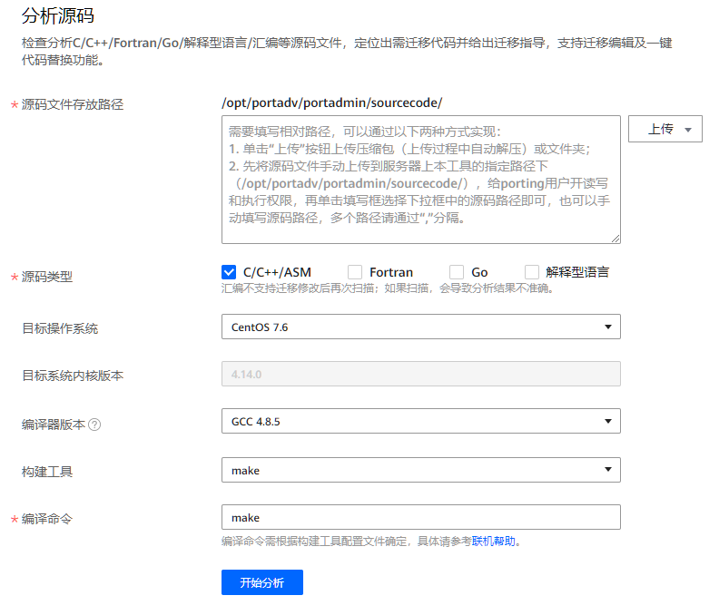

前提条件
已成功登录鲲鹏代码迁移工具。

- 任务运行过程中会执行上传源码包中构建文件的构建命令，请确保上传的内容为需要进行分析检查的内容且不存在安全问题，避免影响服务器正常运行。
- “/opt/portadv”为工具默认安装目录，下文以此默认路径为例，请根据实际情况替换。
操作步骤
- 在页面左侧，选择“源码迁移”。
- 在创建分析任务区对以下参数进行配置。图1 源码迁移
表1 源码迁移参数说明 参数
说明
源码文件存放路径
需要填写相对路径，可以通过以下两种方式实现：
- 单击“上传”按钮上传压缩包（上传过程中自动解压）或文件夹。
- 先将源码文件手动上传到服务器上本工具的指定路径下（例如：/opt/portadv/portadmin/sourcecode/），给porting用户开读写和执行权限，再单击填写框选择下拉框中的源码路径即可，也可以手动填写源码路径。说明：
在扫描含全汇编的源码时，用户需要先在源码文件的根目录下编译生成make.log，然后再打包上传。例如：用户要扫描含纯汇编的源码example，需要先在/opt/portadv/用户名/sourcecode/example/下生成make.log，再填写相对路径example。
在“上传”下拉菜单中可选择：- 压缩包：选择上传源码文件压缩包，工具会自动解压。说明：
- 支持上传tar，tar.bz，tar.bz2，tar.gz，tar.xz，tbz，tbz2，tgz，txz，zip格式的压缩包，只允许同时上传一个压缩包。源码文件压缩包小于或等于1GB，解压后小于或等于剩余磁盘空间的一半。
- 工具会自动将压缩包解压至和压缩包同名的文件夹。例如上传的压缩包为test.zip，工具会自动解压至test文件夹。
- 文件夹：选择上传本地解压的源码文件夹。说明：
- 只允许同时上传一个文件夹，文件夹小于或等于剩余磁盘空间的一半。
- IE浏览器不兼容文件夹上传功能，上传文件夹需要使用其他浏览器，如Google Chrome，Microsoft Edge。
源码类型
选择源码类型。可选择：
编译器版本
选择编译器版本。
目标系统默认的编译器版本：
- BC-Linux 7.6默认为GCC 4.8.5
- BC-Linux 7.7默认为GCC 4.8.5
- CentOS 7.4默认为GCC 4.8.5
- CentOS 7.5默认为GCC 4.8.5
- CentOS 7.6默认为GCC 4.8.5
- CentOS 7.7默认为GCC 4.8.5
- CentOS 8.0默认为GCC 8.2
- CentOS 8.1默认为GCC 8.3
- CentOS 8.2默认为GCC 8.3
- Deepin 15.2默认为GCC 6.3
- Debian 10默认为GCC 8.3
- EulerOS 2.8默认为GCC 7.3
- iSoft 5.1默认为GCC 7.3
- Kylin V10 SP1默认为GCC 7.3
- LinxOS 6.0.90默认为GCC 6.3
- NeoKylin V7U5默认为GCC 4.8.5
- NeoKylin V7U6默认为GCC 4.8.5
- openEuler 20.03默认为GCC 7.3
- openEuler 20.03 SP1默认为GCC 7.3
- openEuler 20.03 SP2默认为GCC 7.3
- SUSE SLES 15.1默认为GCC 7.4
- Ubuntu 18.04.x默认为GCC 7.3
- Ubuntu 20.04.x默认为GCC 9.3
- UOS 20 SP1默认为GCC 8.3
- uosEuler 20默认为GCC 7.3
C/C++/ASM和Go可选择：
- GCC 4.8.5/4.9.3/5.1/5.2/5.3/5.4/5.5/6.1/6.2/6.3/6.4/6.5/7.1/7.2/7.3/7.4/8.1/8.2/8.3/9.1/9.2/9.3说明：
C/C++/ASM与GO语言共用编译器版本。
Fortran可选择：
- GFORTRAN 7
- GFORTRAN 8
- GFORTRAN 9
构建工具
选择构建工具。可选择：
- make
- cmake
- automake
- go说明：
“go”选项只在“源码类型”仅勾选“Go”或同时勾选“Go”与“解释型语言”时可用。
编译命令
源码编译命令。
编译命令需根据构建工具配置文件确定，具体请参考通过构建工具配置文件识别编译命令。
目标操作系统
选择目标系统版本。可选择：
- BC-Linux 7.6/7.7
- CentOS 7.4/7.5/7.6/7.7/8.0/8.1/8.2
- Deepin V15.2
- Debian 10
- EulerOS 2.8
- iSoft 5.1
- Kylin V10 SP1
- LinxOS 6.0.90
- NeoKylin V7U5
- NeoKylin V7U6
- openEuler 20.03
- openEuler 20.03 SP1
- openEuler 20.03 SP2
- SUSE SLES 15.1
- Ubuntu 18.04.x
- Ubuntu 20.04.x
- UOS 20 SP1
- uosEuler 20
- 更多
说明：点击“更多”后，根据页面上的步骤升级依赖字典，然后查看更新后的操作系统列表。
目标系统内核版本
目标操作系统对应的内核版本。
- BC-Linux 7.6支持4.19.25
- BC-Linux 7.7支持4.19.25
- CentOS 7.4支持4.11.0
- CentOS 7.5支持4.14.0
- CentOS 7.6支持4.14.0
- CentOS 7.7支持4.18.0
- CentOS 8.0支持4.18.0
- CentOS 8.1支持4.18.0
- CentOS 8.2支持4.18.0
- Deepin V15.2支持4.19.34
- Debian 10支持4.14.0
- EulerOS 2.8支持4.19.36
- iSoft 5.1支持4.19.90
- Kylin V10 SP1支持4.19.90
- LinxOS 6.0.90支持4.19.0
- NeoKylin V7U5支持4.14.0
- NeoKylin V7U6支持4.14.0
- openEuler 20.03支持4.19.90
- openEuler 20.03 SP1支持4.19.90
- openEuler 20.03 SP2支持4.19.90
- SUSE SLES 15.1支持4.12.14
- Ubuntu 18.04.x支持4.15.0
- Ubuntu 20.04.x支持5.4.0
- UOS 20 SP1支持4.19.0
- uosEuler 20支持4.19.90
说明：如果用户所处的环境Glibc版本低于2.28，则无法使用最新的汇编文件自动翻译功能，如有需要，请单击页面上的“查看安装指导”，按照指示进行操作。
- 单击“开始分析”，生成分析报告。
弹窗页面显示任务分析进度，分析完成后，单击“查看报告”进入“迁移报告”界面。

- 用户可在任务进行过程中单击关闭，取消任务。
- 支持多个用户同时创建分析任务。
- 任务分析失败或评估结果为无需迁移时会产生空白报告。
- 分析结果可能因环境不同而产生差异，属于正常情况。